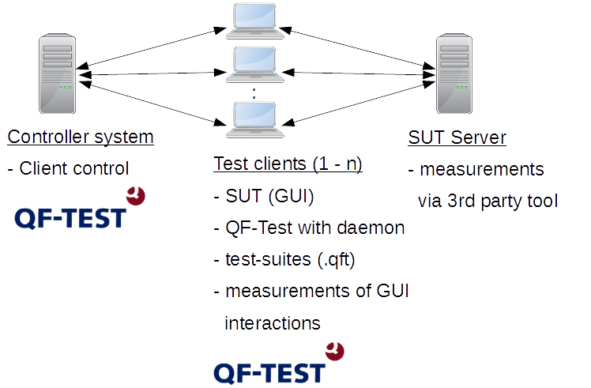
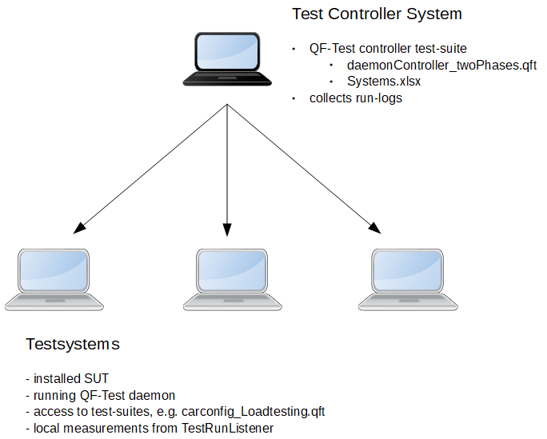
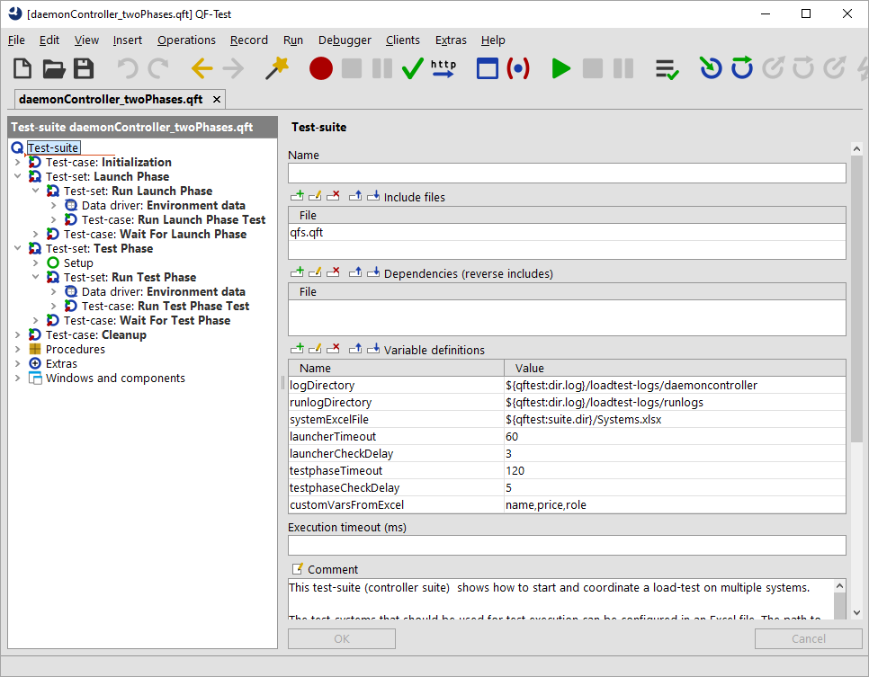

| Version 6.0.3 |
 Video: Load testing
Video: Load testing
In addition to functional and system tests, QF-Test can also be used to perform load tests, stress tests or performance tests. The idea is to test the performance of some server applications by running a number of GUI clients concurrently.
Performance is measured by running multiple GUI clients in parallel. QF-Test enables you to measure the actual end-to-end response times (the time span from user action until the result shows up). For the following paragraphs we will use the term load testing.
There are many different ways for setting up and performing load tests, most of which are not using real GUI clients. Instead they directly make use of the protocol between the client and server, e.g. by sending HTTP request or performing RMI or other kinds of remote procedure calls.
There are a number of pros and cons for protocol-based or GUI-based load testing:
In some cases it can be quite reasonable to combine both approaches. You can think about running GUI tests on a few systems in order to measure those end-to-end times and in parallel you can trigger protocol-based tests in order to create some load.
In summary, GUI-based load tests can be very useful and efficient - especially if functional tests can be reused - provided that either the number of clients that need to be simulated is not too high, or that sufficient hardware is available for the client side.
At the end of this section here is a overview diagram showing all involved systems.
|
|  | ||
|
| Figure 29.1: Load testing scenario | ||
As load testing is a sophisticated subject QF-Test provides a demo tests-suite
which can be used as initial point for your project. You can find that demo solution at
qftest-6.0.3/demo/loadtesting/. This folder contains the following files:
|
|
|
||||||||||||
|
| Table 29.1: Content of load testing directory | ||||||||||||
The test-suites and files mentioned above can be applied to a load testing project which makes use of multiple test-systems. Please take care to copy the demo folder to a project-related folder first and modify them there. The subsequent figure shows an illustration:
|
|  | ||
|
| Figure 29.2: Overview load testing project | ||
The provided sample test-suite for controlling the test-run looks like this:
|
|  | ||
|
| Figure 29.3: Sample test-suite daemonController_twoPhases.qft | ||
In order to execute load tests with QF-Test you should take care of the following:
You can find brief explanations as well as some hints for each item in the following sections.
You perform load tests with QF-Test via the GUI. GUI tests require an active user session and shouldn't get executed in parallel at the same desktop. That's why we recommend to set-up a virtual or physical system for every client involved. It's indeed possible to run multiple GUI tests in parallel on the same desktop, but this can end up in very subtle problems, e.g. issues with the current focus. That's why running multiple GUI tests on the same desktop is not recommended and should only be taken into consideration in exception.
QF-Test needs to be installed on every system. In addition, the required test-suites, the configuration file of QF-Test and necessary test data files need to be deployed to the test-systems as well. You can either copy those files to every system locally or you establish a common network share. Furthermore, every test-system requires at least a runtime license in order to run the tests. QFS offers to lease such runtime licenses even for a certain period of time.
The simplest case is to run the same test on all involved test-systems. However, many load testing projects require different sets of GUI tests to be executed. You can think about running tests for various roles of users or user groups. A possible group can represent standard users another some kind of administrator users.
Besides designing the test-run for multiple roles load tests are often split into several phases. A phase represents a certain thematic priority. As an example you can divide your project into four phases. The first phase stands for the "Launch" phase. There, the SUT is getting launched on all involved test-systems and some initial actions as the log-in can take place. During the second phase 50 clients perform their specific test-scenario. The third phase is performed using 100 clients and the final fourth phase downgrades to 50 clients again. This kind of scaling is also called ramp-up phase (incrementally increasing load) and ramp-down phase (incrementally decreasing load).
Such a conception using several phases increasing the load allows you to test the load capacity of your application in several steps. Like this you will get the information that your application was ok in phase one and problems occurred in the second phase, rather than just a statement about all or nothing.
Using several phases makes sense if multiple roles are the actual focus of your tests. In some cases launching the application on all involved test-system can break the environment. So you can think about splitting your project at least into a "launch" phase and "test" phase.
You should create one test-suite per role to keep track of your test-cases.
Implementation in the sample test-suite:
You can find a sample project with two phases in the provided controller test-suite
daemonController_twoPhases.qft
The first phase (Launch Phase Phase) launches the application. The second phase (Test Phase)
represents the actual test phase. You can configure the required test-suite in the corresponding
Run...Phase test nodes of each phase.
The provided sample focuses on several roles instead of phases. In case you would like to create a third phase,
simply copy the test node Test Phase and rename it accordingly.
You need to launch the QF-Test daemon before you can start your test-run. This QF-Test daemon requires a vacant network port. In order to work effectively we recommend to use the same port on all systems, e.g. 5555.
You can launch the daemon like this:
|
|
|
|||
|
| Example 29.1: Launching QF-Test daemon | |||
Please note, that the daemon needs to be started in an active user session. You can accomplish this using tools like the task planer. You can find further details about the daemon at section 22.2. Chapter Hints on setting up test-systems contains useful tips and tricks to set-up the daemon process. In FAQ 14 you can find technical details.
If you want to check whether the daemons are up and running you can either run individual ping commands
of the daemon or you run the provided test-suite
checkForRunningDaemons.qft.
|
|
|
|||
|
| Example 29.2: Ping of QF-Test daemon at localhost | |||
NoteOn Windows you should use the command qftestc.exe instead of qftest.exe
for every command.
During test execution you will need some scripts that will contact the various QF-Test daemons in order to co-ordinate the test run. Such scripts can use QF-Test's daemon API (see section 51.2) or its command line (see chapter 40).
Implementation in the sample test-suite:
The provided test-suite daemonController_twoPhases.qft
allows you to run such a load testing scenario and collect the run-logs of the test-runs afterwards.
In the provided Excel file
Systems.xlsx you can configure which test-systems
should be involved. That files also contains some variables to organize your tests in roles as described
in subsection 29.2.2.
Once all test-systems have been correctly configured you can start the test-run via running the entire test-suite.
Besides the pure execution of such a load testing project you can also meet further requirements. The provided test-suites shows samples for the following aspects:
Evaluating results can become quite challenging just because of that huge amount of data. You can analyze the QF-Test run-logs as well as the QF-Test reports. Perhaps you receive some measurements at server side or you find a couple of logs which you can analyze by specific tools.
During test execution you can also create custom log-files with QF-Test as described in subsection 29.3.2 for details.
To get consistent results, it may sometimes be necessary to coordinate the tests in the parallel threads, either to make sure that all clients access the server simultaneously, or to prevent just that. Furthermore a role (see previous section) might require all test-systems to be in a certain state before running a specific action.
Test-runs can be synchronized with the help of a 'Server script' node. That script should contain the following:
rc.syncThreads("identifier", timeout, remote=3)
identifier is a name for the synchronization point,
timeout is the
maximum time in milliseconds to wait for all threads to reach the given synchronization
point and remote specifies how many systems should wait for that
synchronization point.
If the timeout is exceeded without the expected number of threads reaching the
synchronization point, a TestException is thrown. To log an error instead of
raising an exception, set the optional parameter throw to 0 (default value
1) or you pack that 'Server script' step into a 'Try' step.
rc.syncThreads("case1", 120000, remote=3, throw=0)
You can find a sample implementation in
carconfig_Loadtesting.qft.
|
|  |
||
|
| Figure 29.4: Call of rc.syncThreads in demo test-suite | ||
It's a very common requirement for GUI tests to measure end-to-end response times.
QF-Test logs those times into its run-log. Instead of having to parse that run-log in
order to retrieve those values you can implement a so-called
TestRunListener to write a dedicated log file, which just contains the
required measurements.
In order to measure the interesting parts, you will need to mark your test-steps or sequence using
a dedicated keyword. The provided sample implementation uses the keyword @transaction
for that purpose. If you want to use another keyword, you have to change the code of the provided
TestRunListener.
In the provided sample test-suite all measurements will be logged into a simple CSV file. That CSV file can be used later for the actual evaluation by another tool. Furthermore, writing that CSV file doesn't brake the test-run. If you want to create Excel files or fill databases in order to evaluate the results you should do that after the test-run due to performance reasons.
You can find details about the TestRunListener at section 50.7.
The sample implementation can be found in
carconfig_Loadtesting.qft.
The created CSV file looks like this:
|
|
|
|||
|
| Example 29.3: CSV file for time measurements | |||
In that CSV file the first value represents the name of the measurement, the second value stands for the duration of the action in milliseconds, the third shows the time when the step was performed, the fourth value shows whether the step was successful.
Due to the complexity of load testing projects you may face issues in several areas.
Why are wrong test-cases executed?
Adapt the variable testsuite in the respective test-case.
You can also address a test-case directly via testsuite#testset.testcase.
The QF-Test daemon cannot be started.
Is the network port vacant? You can check this using the netstat command.
Here is a sample for the port 5555.
The test-systems cannot be reached although the QF-Test daemon is running.
Check whether the QF-Test daemon can be reached on the test-sytem, see subsection 29.2.1. If the QF-Test daemon is running, please perform following steps:
-serverhost localhost or -serverhost IP address
or -serverhost <host name>. In case you use the IP address, please also access that system using the IP-address, otherwise
use the host name.
For loadtesting of web applications you may also use a browser in headless mode. The advantage is the browser does not have a GUI and therefore does not need its own user session. The drawback is that the GUI test then has some restrictions compared to 'normal' browser tests:
For further informationen on headless browsers please see section 13.7.
| Last update: 9/6/2022 Copyright © 1999-2022 Quality First Software GmbH |